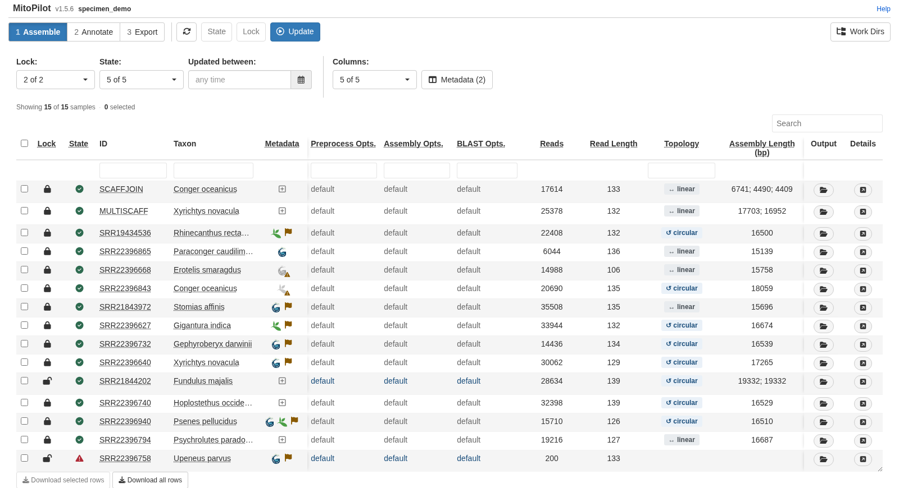
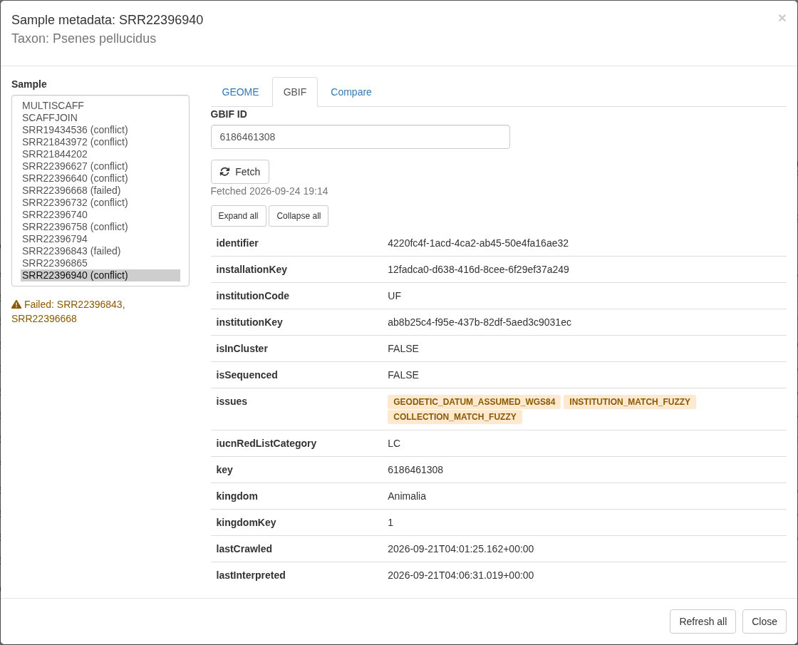
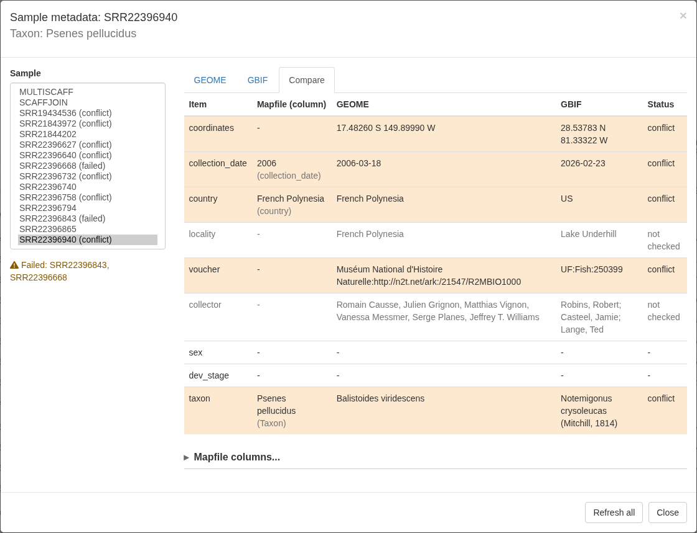
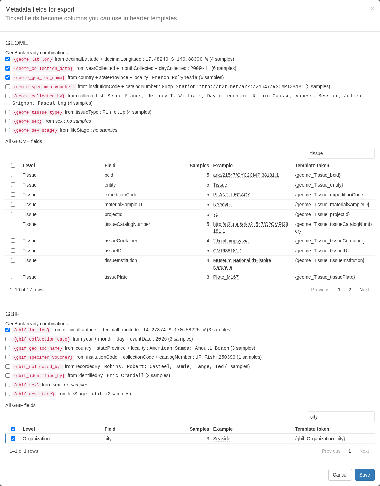
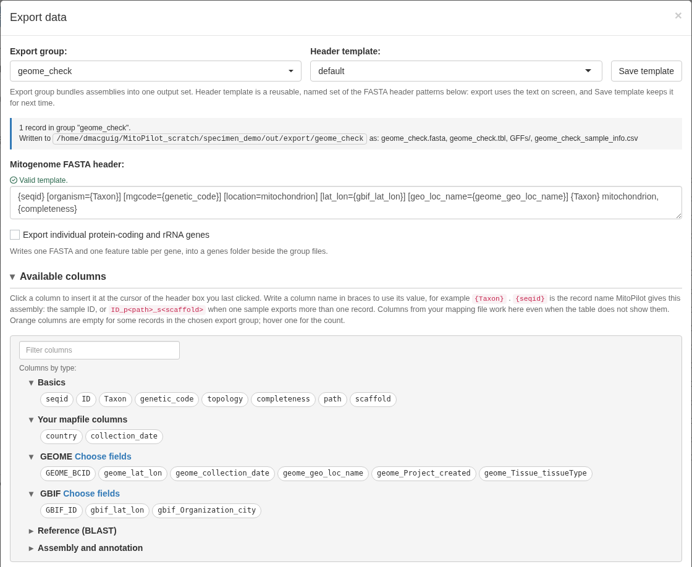
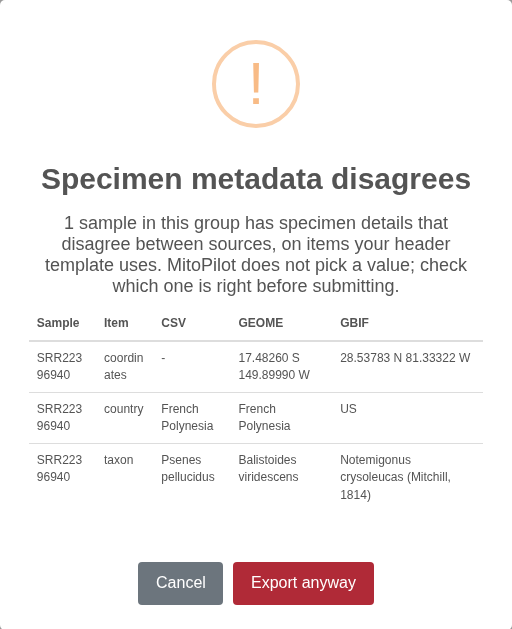

What MitoPilot pulls, and from where
MitoPilot can link each sample to specimen records in two public databases:
-
GEOME (the Genomic Observatories
Metadatabase) stores specimen, tissue, and collecting-event metadata.
Every record has a BCID, a persistent identifier such as
ark:/21547/CXu2MBIO1000.1. Given a BCID, MitoPilot fetches that record, walks up its parent records (for example Tissue, then Sample, then collecting Event), and adds the GEOME expedition and project. -
GBIF (the Global Biodiversity
Information Facility) publishes occurrence records from museums and
other collections. Every occurrence has a gbifID, a number such as
6186461308. Given a gbifID (or EZID for Smithsonian NMNH records), MitoPilot fetches the occurrence, the dataset it belongs to, and the organization that published it.
Everything is stored in the project database, so you can:
- browse the full records for each sample in the app,
- see where your mapping file, GEOME, and GBIF disagree, and
- pick fields, including GenBank-ready source modifiers such as
lat_lonandcollection_date, to use in FASTA headers at export.
MitoPilot never merges values or picks one source over another. Each source keeps its own fields, and you decide which ones go into your headers.
Both links are optional. Projects without BCIDs or gbifIDs work exactly as before.
Public records only. MitoPilot reads public GEOME records and public GBIF occurrences. Private GEOME projects are not supported yet, because logging in to GEOME from another program needs credentials issued by the GEOME team.
Finding the identifiers
GEOME BCID. Open a record on geome-db.org (a tissue, sample, or
event) and copy its identifier, which starts with ark:/.
Use the BCID of the most specific record that matches your sequenced
material, usually the tissue: MitoPilot fetches everything above it.
Full URLs are trimmed to the bare ARK, so all of these work:
ark:/21547/CXu2MBIO1000.1
https://n2t.net/ark:/21547/CXu2MBIO1000.1
https://geome-db.org/record/ark:/21547/CXu2MBIO1000.1GBIF ID. Open the occurrence on gbif.org and copy the number at the end of its address. The number and both link forms work:
6186461308
https://www.gbif.org/occurrence/6186461308
https://api.gbif.org/v1/occurrence/6186461308Smithsonian NMNH specimens can use their EZID instead. MitoPilot looks up the matching GBIF occurrence, so the specimen must already be on GBIF. The bare ARK and both link forms work, with or without dashes:
ark:/65665/35921f3971d824c6ca6ce808364d17e8d
http://n2t.net/ark:/65665/35921f397-1d82-4c6c-a6ce-808364d17e8d
https://collections.nmnh.si.edu/search/fishes/?ark=ark:/65665/35921f3971d824c6ca6ce808364d17e8dAn EZID never changes, so it is a safer choice than a gbifID for NMNH specimens.
GBIF IDs can change. GBIF may give an occurrence a
new gbifID when its dataset is republished. If an ID that used to work
stops resolving, MitoPilot keeps the data it fetched before and shows
the fetch as failed. Look the specimen up again on gbif.org (the stored
occurrenceID and catalog number help) and paste the new
ID.
Some GEOME projects also publish to GBIF. Their GBIF occurrences
carry the GEOME ARK in occurrenceID or
catalogNumber, and their publisher is “The Genomic
Observatories Metadatabase (GeOMe)”. MitoPilot does not link the two
automatically; add both IDs if you want both.
Adding identifiers at project setup
Add a column of BCIDs, a column of gbifIDs, or both to your mapping
file (see Running Your
Own Project), and name them with mapping_geome and
mapping_gbif:
ID,Taxon,R1,R2,Tissue_BCID,Occurrence
FISH01,Psenes pellucidus,FISH01_R1.fastq.gz,FISH01_R2.fastq.gz,ark:/21547/CXu2MBIO1000.1,
FISH02,Notemigonus crysoleucas,FISH02_R1.fastq.gz,FISH02_R2.fastq.gz,,6186461308
FISH03,Conger oceanicus,FISH03_R1.fastq.gz,FISH03_R2.fastq.gz,,
new_project(path = "my_project", mapping_fn = "mapping.csv",
mapping_geome = "Tissue_BCID", mapping_gbif = "Occurrence",
data_path = "reads/")- The columns are stored in the project as
GEOME_BCIDandGBIF_ID. If your columns already have those names, leave outmapping_geomeandmapping_gbif. - Blank cells are fine: those samples simply have no link.
- MitoPilot fetches the records during setup, which needs an internet
connection. When setting up offline, pass
fetch_geome = FALSEandfetch_gbif = FALSE, then runfetch_geome()andfetch_gbif()later.
new_project_userAsmb() takes the same arguments.
Adding or changing identifiers later
add_samples() and update_sample_metadata()
accept mapping_geome, mapping_gbif,
fetch_geome, and fetch_gbif too. With
update_sample_metadata(), samples whose identifier changed
(or was added) are fetched again, and a blank cell removes that sample’s
link and its data for that source only.
To fetch again without touching the mapping file:
fetch_geome("my_project") # refresh every BCID
fetch_gbif("my_project") # refresh every gbifID
fetch_gbif("my_project", ids = "FISH02") # refresh one sample
fetch_gbif("my_project", ids = c("FISH01", "FISH02"),
gbifs = c("2336663130", "6186461308"))The last form sets (or replaces) the gbifIDs of those samples before
fetching; fetch_geome() does the same with
bcids. A blank value removes the link.
When some fetches fail, the functions finish the rest and then give one warning listing each failed sample with the reason, for example:
Warning message:
GBIF fetch failed for FISH02 (GBIF occurrence not found (IDs can change when a dataset is republished))Records are fetched when you run these functions, not when the pipeline runs.
Viewing records in the app
The Metadata column
The Assemble, Annotate, and Export tables have a Metadata column right after Taxon. It shows one icon for each source the sample has an ID for, plus a flag when the sources disagree:
| Icon | Meaning |
|---|---|
| GEOME “G” | The sample has a GEOME BCID and its record was fetched. |
| GBIF leaf | The sample has a GBIF ID and its record was fetched. |
| Faded logo | That source has an ID but has not been fetched yet. |
| Faded logo with a small warning triangle | The fetch from that source failed. Hover to see why. |
| Orange flag | The sources disagree on at least one item (see Comparing sources). |
| Faint plus | No GEOME BCID or GBIF ID. |
Hovering over an icon lists each source with its status, then any items in conflict and any items that were not checked.

The column is always shown. To add identifiers from the app, click a sample’s plus icon.
Showing metadata in the tables
The Metadata button next to each table’s
Columns picker chooses which metadata fields appear as
table columns. The choice is saved in the project and shared by the
Assemble, Annotate, and Export tables. You can temporarily hide all
metadata fields using the Columns picker.
The window lists every field that has a value for at least one sample: the extra columns from your mapping file, then GEOME fields, then GBIF fields, with the number of samples that have each one and an example value. Use the search box, or the Map file, GEOME, and GBIF buttons, to narrow the list, and click rows to tick them. Mapping-file fields start ticked; GEOME and GBIF fields start unticked. Clear all unticks everything.
This only changes what you see. What goes into exported files is set with Choose fields (see Using metadata fields at export).
The sample metadata viewer
Click any icon in the Metadata column to open the viewer for that sample. The title shows the sample ID and its Taxon; Sample on the left lists every sample, with “(failed)” or “(conflict)” after samples that need attention.
Clearing an identifier box and clicking Fetch removes that link. Refresh all fetches every sample’s GEOME and GBIF records again.

Comparing sources
The Compare tab lists each item MitoPilot checks, with the value from your mapping file (and the column it came from), from GEOME, and from GBIF, and a status:
| Status | Meaning |
|---|---|
| agree | Every source that has a value agrees. |
| not checked | MitoPilot does not judge this difference: the values are free text, or a value could not be read. |
| conflict | A real disagreement. |
| single | Only one source has a value. |
| - | No source has a value. |
Blanks never conflict: only sources that both have a value are compared.

Which mapping-file columns are compared
MitoPilot finds your mapping-file columns by name (ignoring case):
| Item | Columns tried, first match wins |
|---|---|
| coordinates |
lat_lon; or a latitude column (lat,
latitude, decimalLatitude) plus a longitude
column (lon, long, longitude,
decimalLongitude) |
| collection_date |
collection_date, date,
eventDate
|
| country |
country, geo_loc_name (the part before
:) |
| locality | locality |
| voucher |
specimen_voucher, voucher,
catalogNumber
|
| collector |
collected_by, collector,
recordedBy
|
| sex | sex |
| dev_stage |
dev_stage, life_stage,
lifeStage
|
| taxon |
Taxon (always) |
If a column has another name, or a matching name holds something else, open Mapfile columns… at the bottom of the Compare tab, pick the column for each item (or (none) to skip it), and click Save columns. Leaving a box empty goes back to automatic detection. The same works from R:
set_metadata_columns("my_project", country = "Country_Name",
coordinates = c("Lat_DD", "Long_DD"))
set_metadata_columns("my_project", country = NA) # back to automatic
set_metadata_columns("my_project", sex = "") # do not compare sexUsing metadata fields at export
Fetched data does not reach your exported files until you choose which fields to use. In the Export module, click Set Export Metadata in the toolbar.

The window has a GEOME section and a GBIF section. Each starts with GenBank-ready combinations: values built from one or more fields in the format GenBank expects for a FASTA source modifier, each with an example and the number of samples that have one. Below that, a table lists every raw field found in the project’s records; use its search box to find a field, and click rows to tick them. Nothing is ticked by default. Click Save and each ticked field can be used in export header templates and is written to the sample summary CSV. To see a field in the tables, use the Metadata button instead.
GEOME combinations
Source fields are taken from the nearest level that has them (a tissue value wins over a sample value, which wins over an event value).
| Column | Built from | Example |
|---|---|---|
geome_lat_lon |
decimalLatitude, decimalLongitude
|
17.48260 S 149.89990 W |
geome_collection_date |
yearCollected, monthCollected,
dayCollected
|
2006-03-18, 2009-11, or
2009
|
geome_geo_loc_name |
country, then stateProvince and
locality
|
French Polynesia: Moorea |
geome_specimen_voucher |
catalogNumber (required), institutionCode
(optional prefix) |
UF:12345 |
geome_collected_by |
collectorList |
as in GEOME |
geome_tissue_type |
tissueType |
as in GEOME |
geome_sex |
sex |
as in GEOME |
geome_dev_stage |
lifeStage |
as in GEOME |
GBIF combinations
Built from the occurrence only (never from the dataset or organization).
| Column | Built from | Example |
|---|---|---|
gbif_lat_lon |
decimalLatitude, decimalLongitude
|
28.53783 N 81.33322 W |
gbif_collection_date |
year, month, day; else
eventDate when it is a single date |
2026-02-23, 2026-02, or
2026
|
gbif_geo_loc_name |
country, then stateProvince and
locality
|
United States of America: Florida, Lake Underhill |
gbif_specimen_voucher |
institutionCode, collectionCode,
catalogNumber (required) |
UF:Fish:250399 |
gbif_collected_by |
recordedBy |
as in GBIF |
gbif_identified_by |
identifiedBy |
as in GBIF |
gbif_sex |
sex |
lowercased |
gbif_dev_stage |
lifeStage |
lowercased |
A combination is empty for a sample unless its required parts exist. Two GBIF rules keep questionable values out of your headers:
-
gbif_lat_lonis empty when GBIF flags the coordinates withZERO_COORDINATE,COORDINATE_INVALID, orCOORDINATE_OUT_OF_RANGE. Other flags, such asCOORDINATE_ROUNDEDorCOUNTRY_COORDINATE_MISMATCH, are shown in the viewer but do not empty the value, so check them yourself. -
gbif_specimen_voucheris empty when the catalog number is a web address or an ARK rather than a real catalog number.
GBIF’s country is its own English name
(United States of America), which is not always the name
GenBank expects (USA). Check geo_loc_name
values against GenBank’s country list before submitting.
Raw fields become columns named
geome_<Level>_<field> or
gbif_<Level>_<field>, for example
geome_Tissue_tissueType or
gbif_Occurrence_occurrenceID.
Adding columns to a header template
The Available columns list in the Export Data window
groups every column you can use: Basics, Your
mapfile columns, GEOME, GBIF,
Reference (BLAST), and Assembly and
annotation. Click a column to insert it at the cursor of the
header box you last clicked (the mitogenome FASTA header box if you have
not clicked one). A GenBank-ready combination inserts the whole source
modifier, for example [lat_lon={geome_lat_lon}]. Hover over
a column to see its value for the first row of any export group, and
type in the filter box to find one. Choose fields next
to GEOME or GBIF opens the Metadata fields window (this closes the
Export Data window, so save your template first).

A template using GEOME and GBIF fields:
{seqid} [organism={Taxon}] [mgcode={genetic_code}] [location=mitochondrion] [lat_lon={gbif_lat_lon}] [collection_date={gbif_collection_date}] [geo_loc_name={geome_geo_loc_name}] [specimen_voucher={gbif_specimen_voucher}] {Taxon} mitochondrion, {completeness}Empty values stay in the header. If a sample has no
value for a field, the header still gets the modifier with nothing after
it, such as [lat_lon=], which GenBank rejects. Only add a
modifier to a template when every sample in the export group has a value
for it. MitoPilot never changes your templates on its own.
The conflict warning at export
When you click Export, MitoPilot checks which items
your header templates use: GEOME and GBIF combinations and raw fields,
and mapping-file columns matched to an item (including
{Taxon}). If any sample in the export group has a
conflict on one of those items, a warning lists each
sample, item, and the differing values. Click Export
anyway to continue or Cancel to go back and
fix the data or the template. Items marked not checked never trigger the
warning.

The ticked columns are also written to the group’s
sample_info CSV.
Limits and troubleshooting
- Public records only (see above).
- Internet access is needed by the machine running R or the app, since that is where GEOME and GBIF are contacted. Compute nodes running the pipeline never contact them.
- A failed refresh of the same identifier keeps the previous data. Only the status changes to failed. Changing a sample to a different identifier clears its old record for that source right away, even if the new fetch then fails.
Messages you may see in the viewer, on a warning icon, or in a fetch warning:
| Message | Meaning |
|---|---|
BCID not found in GEOME |
GEOME has no record with that identifier. GEOME answers unknown IDs with a server error, so a typo in a well-formed BCID shows up this way. |
record is private or needs a GEOME login |
The record belongs to a private GEOME project. |
could not reach GEOME (...) |
No connection to api.geome-db.org. Try again later with
fetch_geome() or Refresh all. |
'x' is not a GEOME BCID (expected ark:/NNNNN/...) |
The value does not look like a BCID. |
BCID not recognized by GEOME |
GEOME rejected the identifier as malformed. |
GEOME returned HTTP ... |
Any other error from GEOME. Try again later. |
GBIF occurrence not found (IDs can change when a dataset is republished) |
GBIF has no occurrence with that gbifID. It may have been replaced when its dataset was republished; look the specimen up again on gbif.org. |
could not reach GBIF (...) |
No connection to api.gbif.org. Try again later with
fetch_gbif() or Refresh all. |
'x' is not a GBIF occurrence ID (expected digits) |
The value is not a gbifID or a gbif.org occurrence link. |
GBIF returned HTTP ... |
Any other error from GBIF, for example when it is busy. Try again later. |